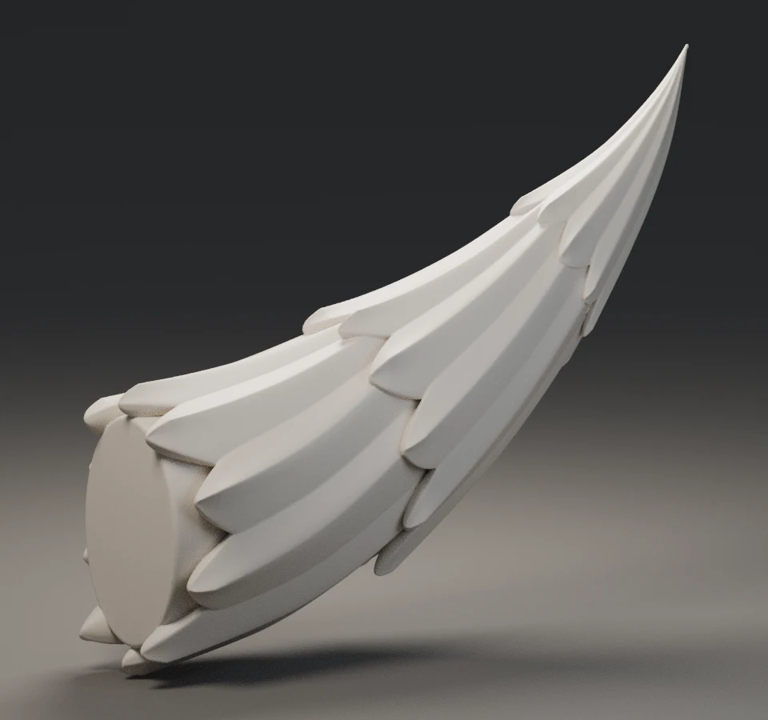

3D-просмотр
Перетаскивайте для вращения · Колесо для масштаба
Фотополимерная печать
Перьевой
декор
Три ряда рельефных перьев огибают овальное основание и сходятся к изогнутой вершине.
- Габариты
- 100 × 30 × 79,6 мм
- Объём модели
- 53,4 см³
- Конструкция
- Полнотелая
26,7 МБ · Масштаб 1:1 · Без поддержек